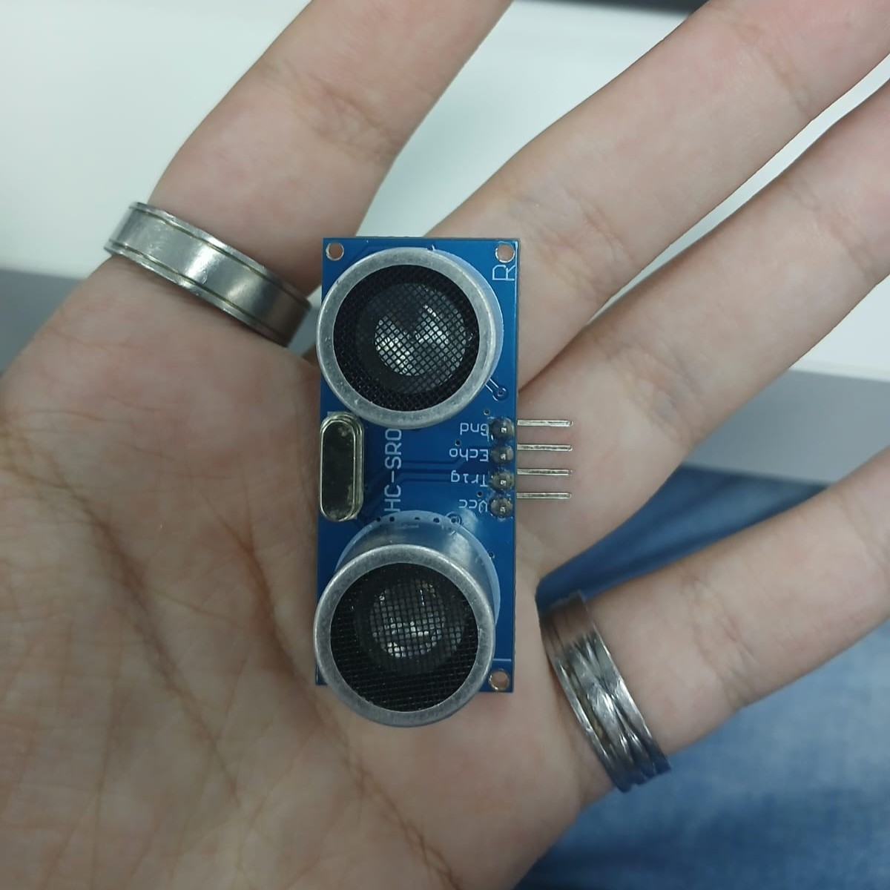
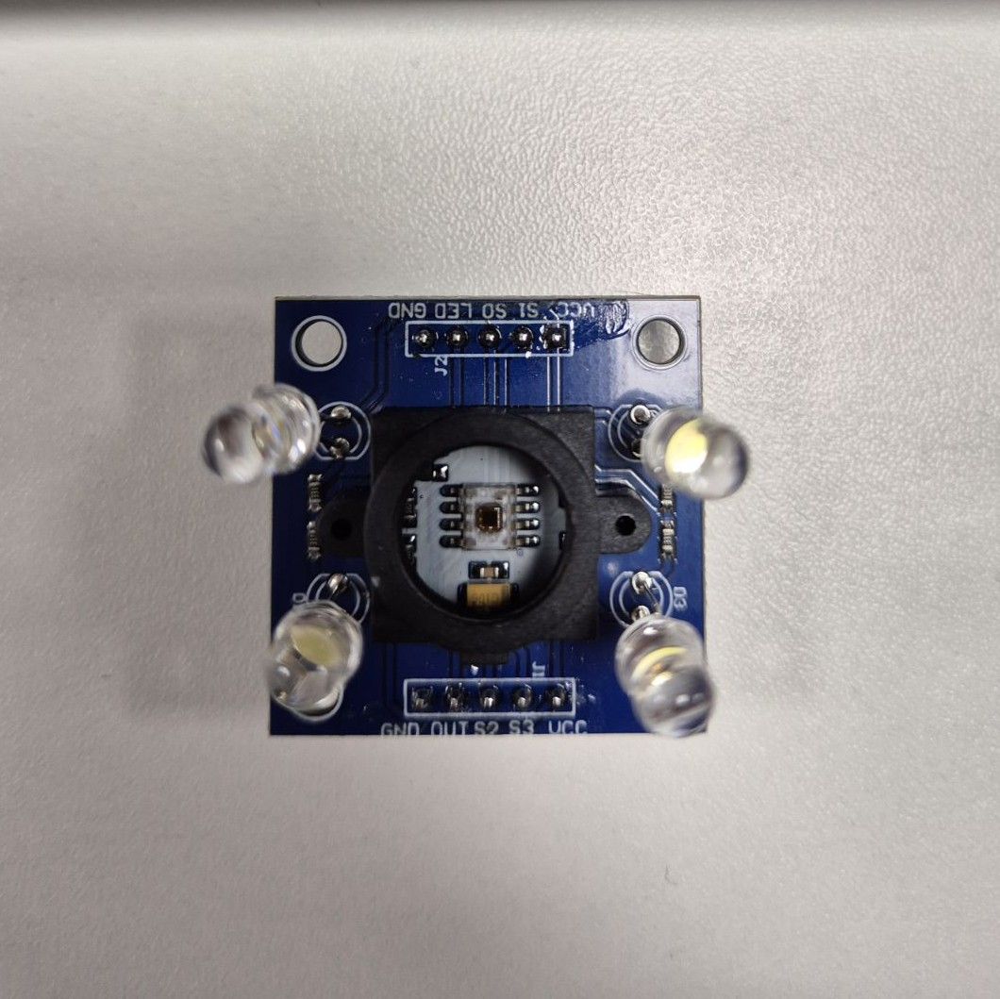
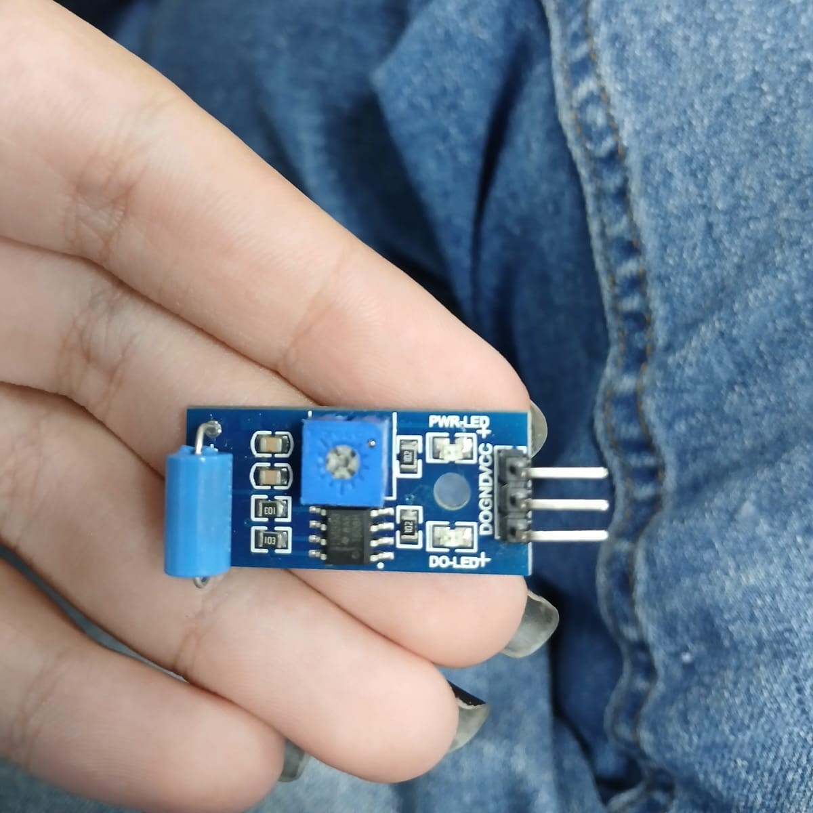
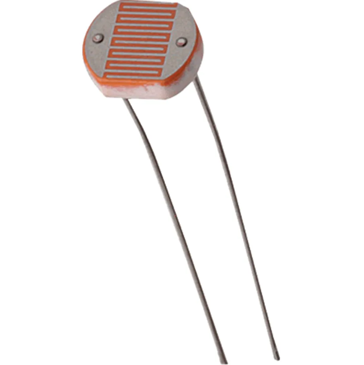
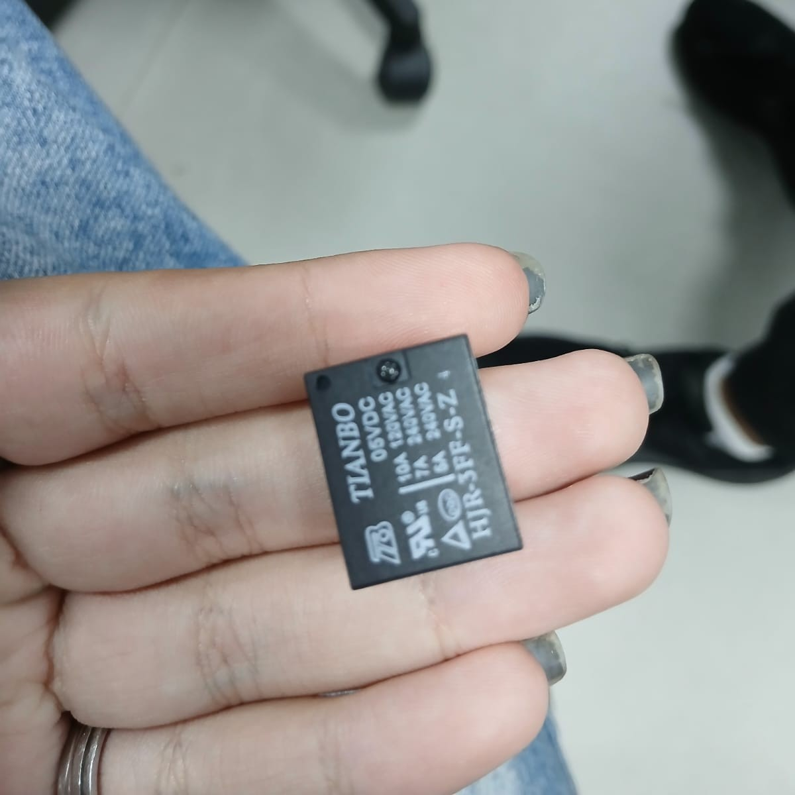

Sensores
Sensor ultrassônico
É usado para medir distâncias sem haver um contato físico.
Ele pode medir distâncias de 2cm a 4m.

Sensor de cor
Ele emite uma luz branca sob um objeto, medindo a intensidade da luz que é refletida por filtros RGB, retornando ao arduino o que foi captado para que assim a cor seja determinada.

Sensor de vibração
Identifica quando algo está vibrando ou sendo movimentado. Dependendo do sensor pode captar o nível e a intensidade da vibração.

Sensor LDR ou fotorresistor
Sua resistência varia de acordo com a intensidade da luz. A resistência fica baixa quando há luz, ficando alta no escuro.

Sensor NTC / PTC
São sensores de temperatura.
Sensor NTC: sua resistência diminui a medida que a temperatura aumenta.
Sensor PTC: sua resistência aumenta a medida que a temperatura aumenta.

Atuador Relé
Ele controla um circuito usando um sinal de um sensor ou do arduino.
